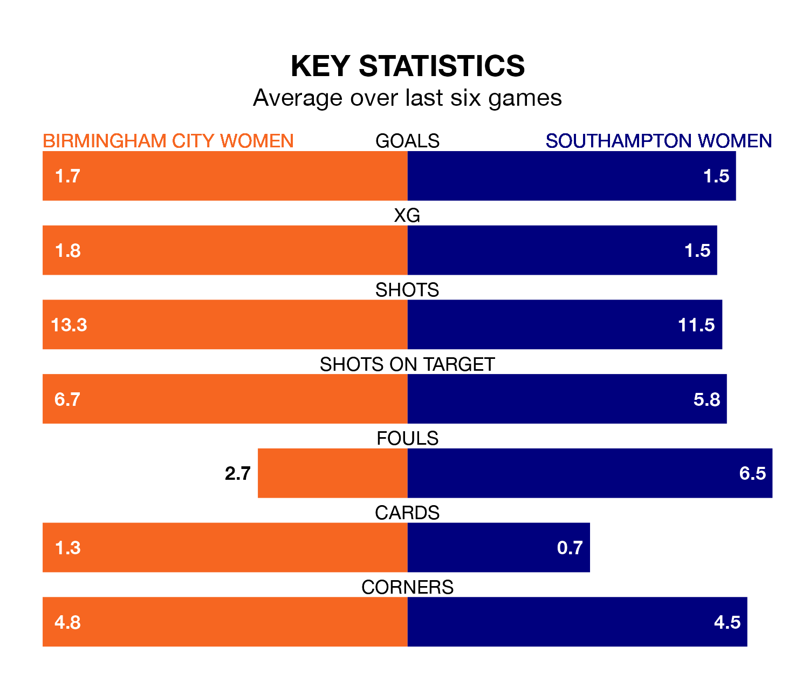

Southampton Women travel to St Andrew's for Sunday's early match against Birmingham City Women looking to bounce back from defeat last time out in the FA Women's Championship.
The Saints, who sit fourth in the league after 15 games, fell to a 2-1 home defeat to Crystal Palace Women on February 4.
They face a Birmingham City side who also lost their last match, a 2-0 defeat to Watford Women, and who sit fifth in the table.
With 26 goals in 15 games so far this season, Southampton are the league's second-highest scorers with 1.7 goals per game. And they are conceding fewer than average, letting in 17 goals at a rate of 1.1 per game.
Birmingham City are also above average scorers, with 1.7 goals per game, compared to a league average of 1.3. They have conceded 0.9 goals per game.
With Lucy Thomas between the sticks, the Blues can rely on one of the league's safest pair of hands. She has kept five clean sheets in her 14 appearances this season, and only one other 'keeper – Sunderland Women's Claudia Moan – has been able to prevent the opposition scoring on more occasions in the FA Women's Championship.
In the Saints' net, Kayla Rendell has three clean sheets in 13 games. She has conceded a goal every 90 minutes, 40% more often than the 126 minutes between goals for Thomas.
The home side are in fantastic form in the FA Women's Championship, with five wins and one loss from their last six games.
With three wins and three losses over that period, the visitors' form is much worse – they have taken nine points from 18, compared to Birmingham City's 15.
In the last five years, Birmingham City and Southampton have played each other on four occasions. Birmingham City won three of them and Southampton one.
On average, the Blues scored 2.0 goals and the Saints 1.2 in those matches.
Their last meeting was on October 1, when Birmingham City won 3-1 away.
Updated: 11:43 (UTC), 08/02/24